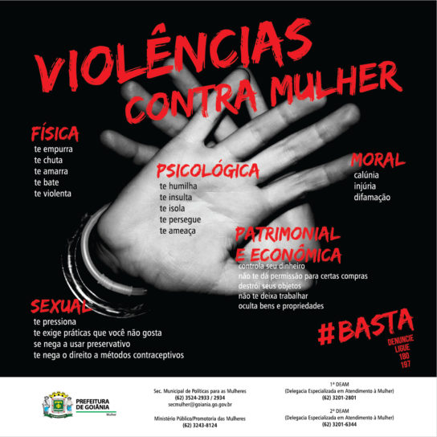

A violência contra a mulher é um problema grave e real que acontece todos os dias. Muitas vezes, acontece dentro de casa e é silenciosa, escondida, ignorada. Precisamos falar sobre isso e combater todas as formas de violência.
Existem diferentes tipos de violência: física, psicológica, moral, sexual e patrimonial. Todas são graves e causam muito sofrimento.
Denunciar é um ato de coragem. Se você presenciar ou sofrer violência, procure ajuda.
Disque 180 - Central de Atendimento à Mulher. Funciona 24 horas, é gratuito e anônimo.
Campanha do Agosto Lilás
Toda mulher tem direito a uma vida sem violência.
O silêncio também é violência.
Quem ama, respeita.